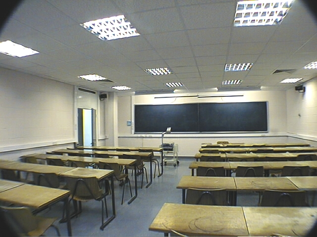
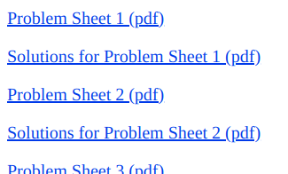
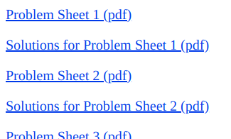

From accessibility to universal and inclusive design
Our past, present and future
Emma Cliffe

Plan
Our past
- Accessing mathematical teaching in 2003
- Our work in context
Accessing mathematical teaching in 2003
The start of a journey.
 

Our work in context
Legal context*
*I am not a lawyer. Seek advice.
Technology context*
*The development of many, many other softwares and underlying technologies are part of this story but not shown
Our work*
*Not everything is here, I am sure. I have also omitted all detail from the working groups and MSOR disabilities series.
Phases*
*Very loosely, how it felt for me...
Our present
- Accessing mathematical teaching today
- Our achievements, given resourcing
Accessing mathematical teaching today
What has changed?

Our achievements, given resourcing
Our future
- Universal Design
- Inclusive Design
- What's next?
Universal design
- Roots in Architecture
- Coined by Ronald L. Mace and defined by the Center for Universal Design in 1997.
The design of products and environments to be usable by all people, to the greatest extent possible, without the need for adaptation or specialized design.
Seven principles of UD
The design is:
- Equitable: useful to people with diverse abilities
- Flexible: accommodates preferences and abilities
- Simple/Intuitive: regardless of the user's background
- Perceptible: communicates information effectively to all
- Error tolerant: minimal issues due to accidental actions
- Low in demands on physical effort
- Usable regardless of user's size, posture or mobility
Inclusive design
In UK, defined by the Commission for Architecture and the Built Environment in two reports:
- The principles of inclusive design, (2006)
- Inclusion by design, (2008)
Inclusive design is a process of designing, building, managing and populating places and spaces that ensures that they work for as many people as possible, not just some groups.
Inclusive environments will
- be responsive to people's needs
- be flexible in use
- offer choice when a single solution can't meet all needs
- be convenient so they can be used without undue effort
- be welcoming, so all people feel they belong
- accommodate without fuss or exception those who have special requirements
Consultation is key to inclusive design.
What's next?
Questions and discussion
These slides are available at:
Put the link here
My email address is:
E.H.Cliffe@bath.ac.uk